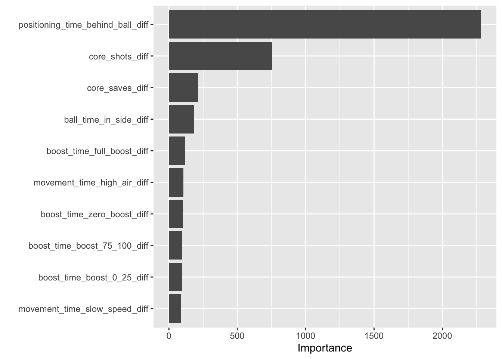

# A tibble: 10 × 4
winner_factor .pred_class .pred_1 .pred_0
<fct> <fct> <dbl> <dbl>
1 0 0 0.322 0.678
2 0 0 0.425 0.575
3 0 1 0.856 0.144
4 0 0 0.278 0.722
5 0 0 0.436 0.564
6 1 1 0.843 0.157
7 1 1 0.581 0.419
8 0 0 0.103 0.897
9 0 1 0.840 0.160
10 1 1 0.667 0.333Random Forest Model to Predict RL Game Outcome
Load in necessary libraries:
Read in dataset:
Get train/test split:
Build Random Forest Model with all Variables Included:
Truth
Prediction 1 0
1 1871 300
0 210 1118[1] 0.8635066The random forest model classified game outcome (win/loss) with 86.35% accuracy.
See the importance of variables in the random forest model:

RANDOM FOREST MODEL WITH ONLY SD VARIABLES INCLUDED:
Select only sd diff variables:
Get train/test split:
Build Random Forest model:
# A tibble: 10 × 4
winner_factor .pred_class .pred_1 .pred_0
<fct> <fct> <dbl> <dbl>
1 0 1 0.805 0.195
2 0 1 0.585 0.415
3 0 1 0.616 0.384
4 0 0 0.371 0.629
5 0 1 0.593 0.407
6 1 1 0.629 0.371
7 1 0 0.435 0.565
8 0 1 0.520 0.480
9 0 1 0.675 0.325
10 1 1 0.645 0.355 Truth
Prediction 1 0
1 1825 1052
0 256 366[1] 0.6256073The random forest model classified game outcome (win/loss) with 62.561% accuracy.
See the importance of variables in the random forest model:
RANDOM FOREST PLOT WITHOUT ANY SD VARIABLES INCLUDED:
Remove all sd variables:
Get train and test split:
Build Random Forest model:
# A tibble: 10 × 4
winner_factor .pred_class .pred_1 .pred_0
<fct> <fct> <dbl> <dbl>
1 0 0 0.270 0.730
2 0 0 0.376 0.624
3 0 1 0.803 0.197
4 0 0 0.200 0.800
5 0 0 0.384 0.616
6 1 1 0.867 0.133
7 1 1 0.563 0.437
8 0 0 0.0964 0.904
9 0 1 0.868 0.132
10 1 1 0.702 0.298 Truth
Prediction 1 0
1 1875 268
0 206 1150Calculate model accuracy from classification table output:
[1] 0.8645327RF model classified with 86.452% accuracy.
See the importance of variables in the random forest model:

Model actually performed slightly better without any of the sd variables included.
RANDOM FOREST MODEL WITH ONLY MOVEMENT VARIABLES:
Make train/test split of the movement data:
Build Random Forest Model with only movement variables included:
# A tibble: 10 × 4
winner_factor .pred_class .pred_1 .pred_0
<fct> <fct> <dbl> <dbl>
1 0 0 0.239 0.761
2 0 1 0.505 0.495
3 0 1 0.910 0.0897
4 0 0 0.228 0.772
5 0 0 0.398 0.602
6 1 1 0.730 0.270
7 1 1 0.799 0.201
8 0 0 0.140 0.860
9 0 1 0.840 0.160
10 1 1 0.663 0.337 Truth
Prediction 1 0
1 1807 322
0 274 1096Calculate model accuracy:
[1] 0.8296656The model classified with 82.967% accuracy
See most important variables in this model:

Clean visual plot of an example decision tree: (now just has positioning time behind ball as only predictor variable)
n= 13985
node), split, n, loss, yval, (yprob)
* denotes terminal node
1) root 13985 5663 1 (0.5950661 0.4049339)
2) positioning_time_behind_ball_diff>=-5.905 8296 1164 1 (0.8596914 0.1403086) *
3) positioning_time_behind_ball_diff< -5.905 5689 1190 0 (0.2091756 0.7908244) *